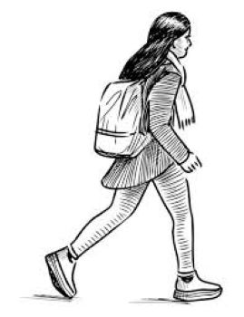

Müzik Dinlemek
Yapmayı en sevdiğim aktivite müzik dinlemek. Aynı zamanda şarkı söylemeyi de çok severim. Yaptığım işleri genellikle müzikle yaparım.
Şu an bu satırları yazarkenSezen Aksu-Yeniler ve Yeni Kalanlar dinliyorum.
Zaten en sevdiğim sanatçı da Sezen Aksu. Rahatlamak istediğim zamanlarda klasik müzik tercih ederim. Genellikle hazırlanmış playlistlerden dinliyorum.
Buraya dinlemeyi sevdiğim bir playlistin linkini bırakıyorum.
Klasik Müzik Playlisti

Kitap Okumak
Müzikten sonra beni en çok rahatlatan aktivite kitap okumak. Özellikle hava yağmurluyken sıcak bir kahveyle okumak gibisi yok. Sezen Aksu'nun Gidemem şarkısında dediği gibi "O zaman hemen git radyoyu aç bir şarkı tut ya da bir kitap oku mutlaka iyi geliyor."
Yürüyüş yapmak
Her gün düzenli olarak yürüyüş yapıyorum. Tabi ki kulaklıkla... Müzik burada da olmazsa olmazım.Bir yere gideceksem yol fazla uzun olmadığı sürece her zaman yürümeyi tercih ederim. 